Um guia visual para fisioterapeutas em início de atuação conectarem:
Material educacional prático para consultar fundamentos, correntes, posicionamento, cuidados e integração com exercício terapêutico.
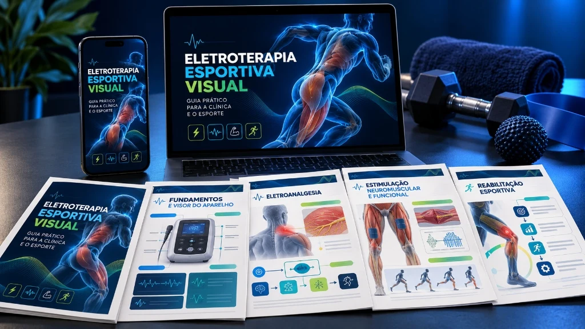
Quero conhecer o guia →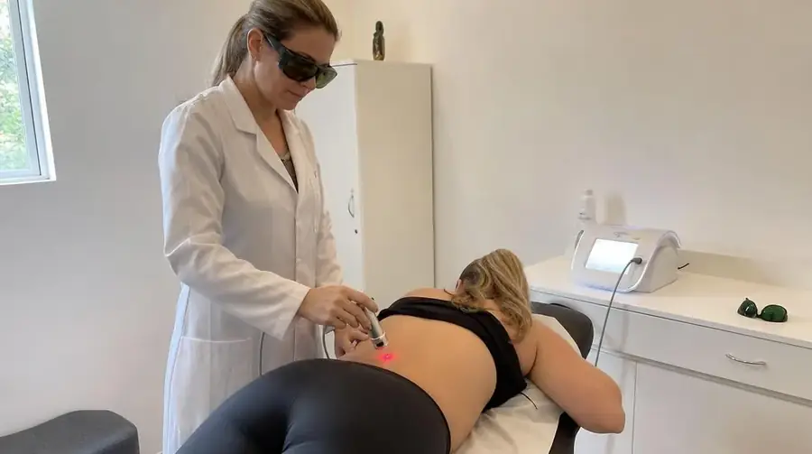
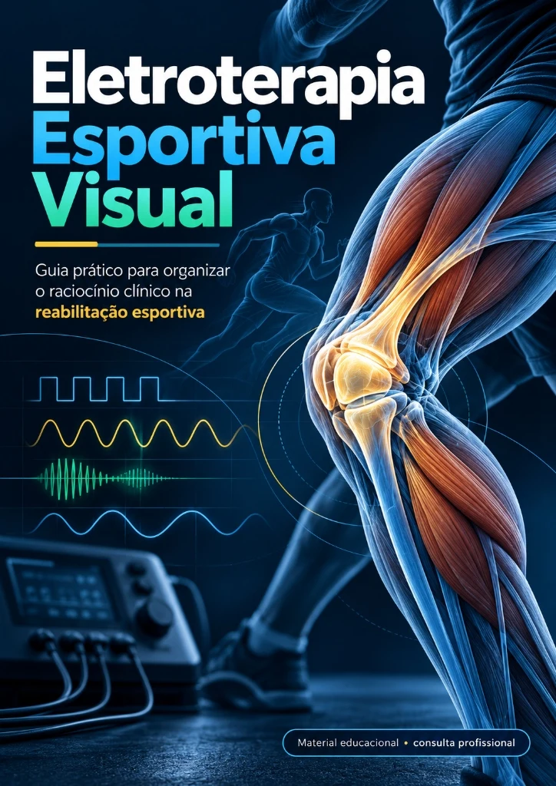
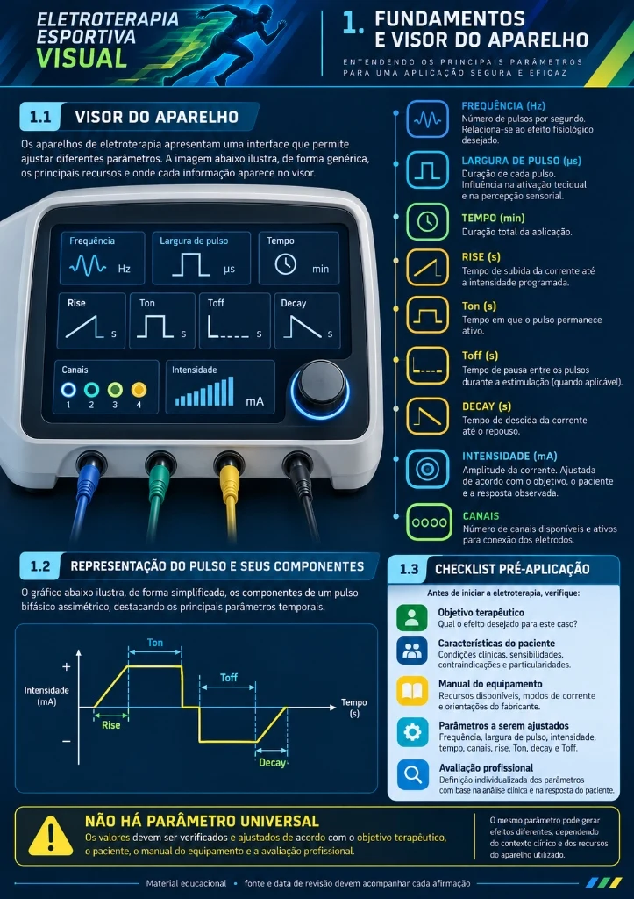
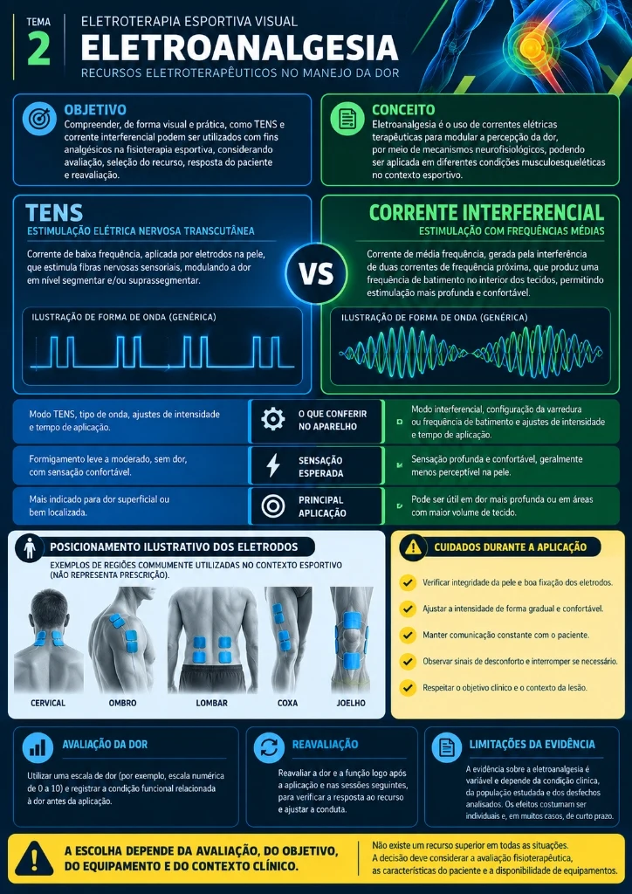
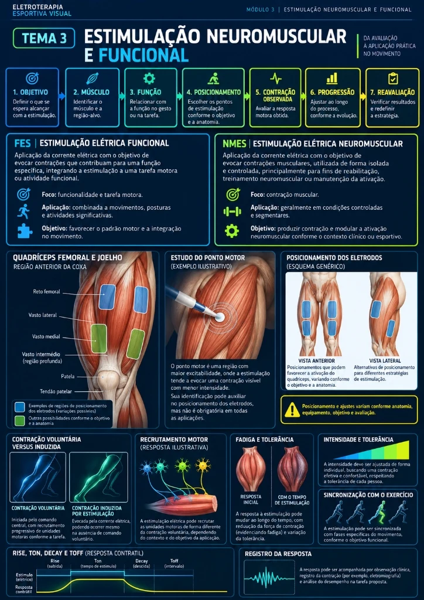
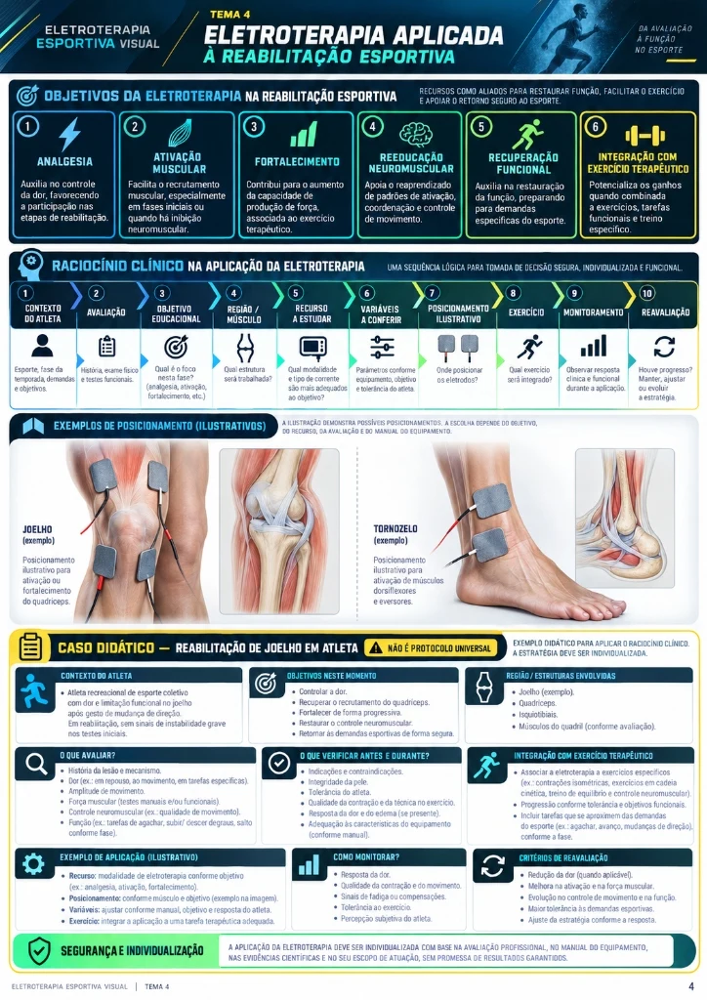
Cada mapa segue uma estrutura visual padronizada para facilitar a leitura — incluindo:
Região / Aplicação
Identificação clara do conteúdo daquele mapa.
Mapa anatômico visual
Representação da região para facilitar a localização.
Pontos ou áreas destacadas
Distribuição apresentada visualmente.
Objetivo da consulta
Contextualização do conteúdo daquele mapa.
Informações essenciais
Dados relevantes apresentados de forma objetiva.
Cuidados e observações
Pontos de atenção relacionados àquela consulta.
Referência científica
Referência resumida no mapa e bibliografia completa no material.
Organização por categorias
Localize o conteúdo desejado com muito mais facilidade.
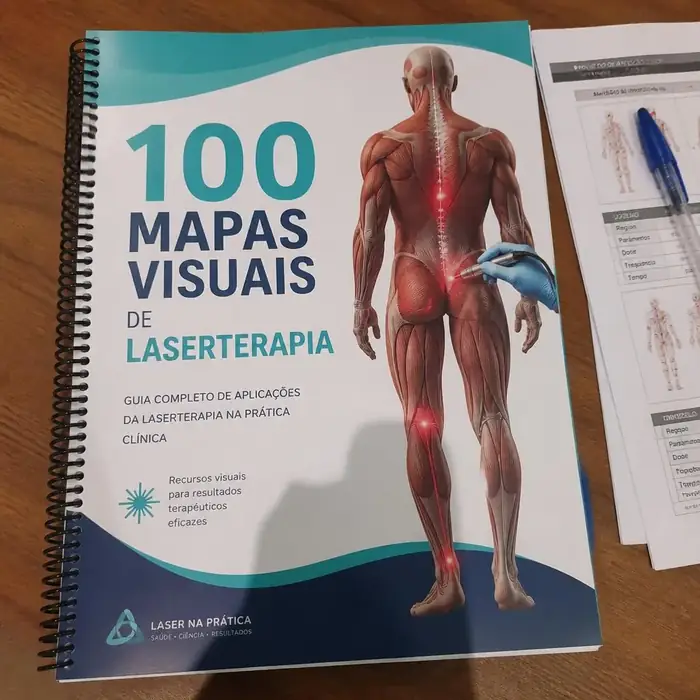
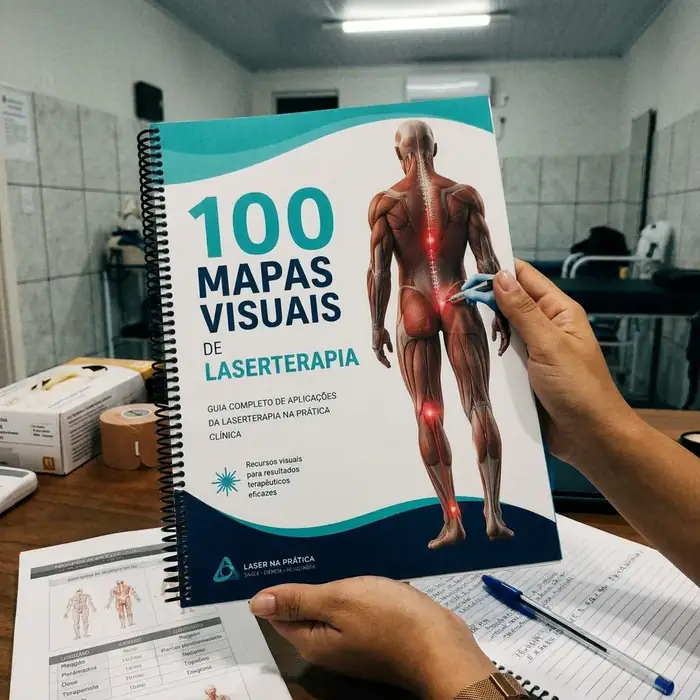
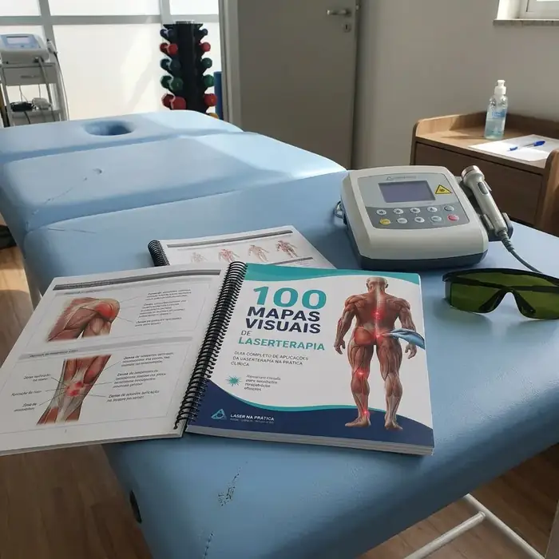
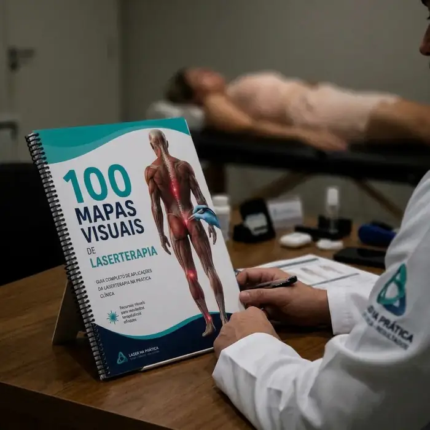
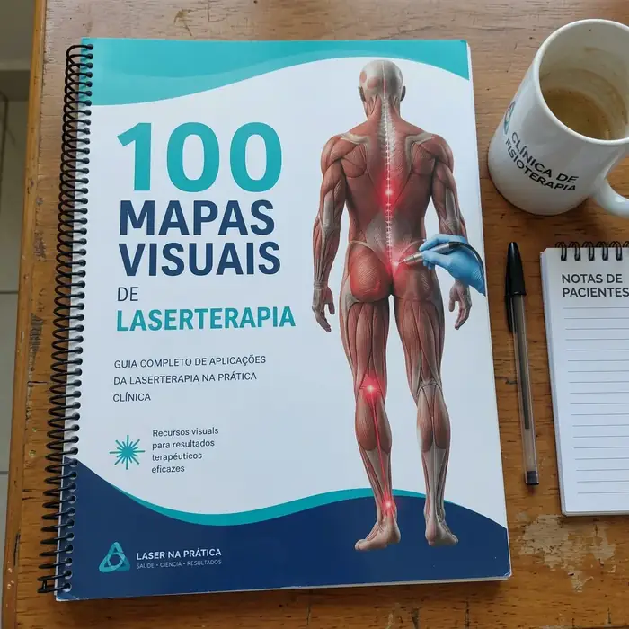
Durante o atendimento esportivo, é comum travar na hora de ligar o aparelho e se perguntar:
Qual objetivo deve ser priorizado na sessão?
Qual região ou músculo-alvo observar e posicionar?
Quais variáveis conferir no visor do equipamento?
Como estudar o posicionamento correto dos eletrodos?
O que monitorar e ajustar durante a estimulação?
Como registrar e reavaliar a resposta com precisão?
O problema não é apenas conhecer as correntes. É conseguir organizar todas essas informações no momento certo.
O Eletroterapia Esportiva Visual foi criado para transformar conteúdos técnicos densos em páginas organizadas, fluxos, mapas, fichas e ilustrações didáticas diretas ao ponto.
Frequência, largura de pulso, rampas e leitura ágil do visor.
TENS vs. Interferencial, sensação esperada e posicionamentos.
FES, NMES, ponto motor, contração e fadiga na prática.
Joelho, tornozelo, ombro e integração com exercício funcional.
Cada tema segue rigorosamente uma sequência visual de 10 passos para estruturar seu pensamento antes, durante e depois da aplicação:
Se preferir, você também pode imprimir e usar no papel
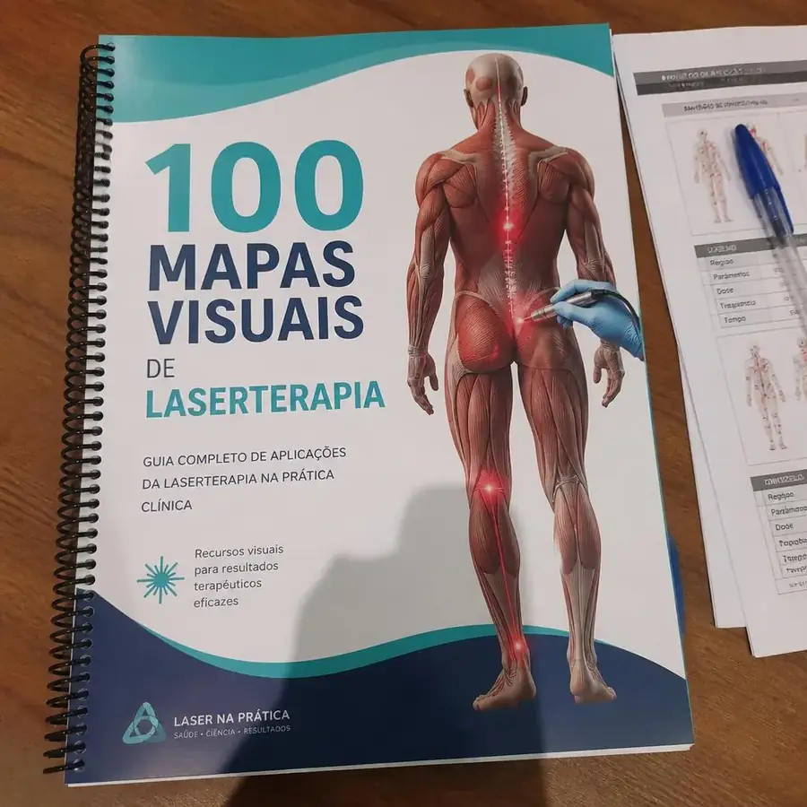
Os parâmetros, posicionamentos e recursos podem variar conforme:
⚠️ Este é um material educacional e de consulta. Não apresenta protocolos universais, prescrição automática ou garantia de resultados. A conduta é de responsabilidade do profissional habilitado.
Escolha a opção ideal para você:
100 Mapas Visuais de Eletroterapia Esportiva
Para quem quer somente o Atlas com os 100 mapas visuais.
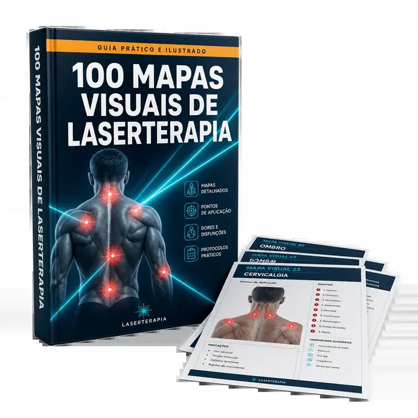
DE R$47 POR APENAS:
R$19,90
ou 3x de R$6,05
ÚLTIMA CHANCE — OFERTA TERMINA HOJE
Atlas Completo + Todos os Bônus
Leve o Atlas mais todos os materiais complementares em um único pacote.
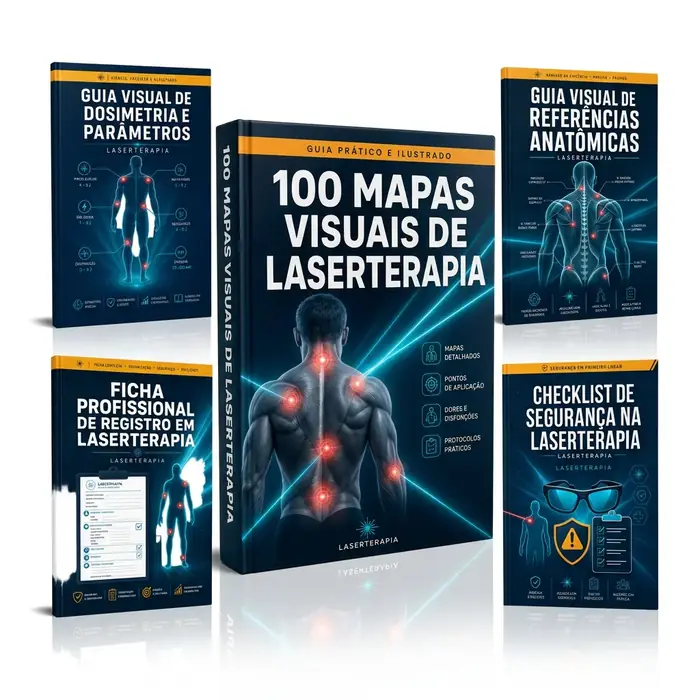
DE R$97 POR APENAS:
R$37
ou 6x de R$5,40
São apenas R$10 a mais para ter acesso não apenas aos mapas, mas também aos quatro materiais complementares. Se sua intenção é ter uma biblioteca mais completa para consulta e organização, essa é a opção com maior valor percebido.
Relatos de quem já está usando o atlas no dia a dia.
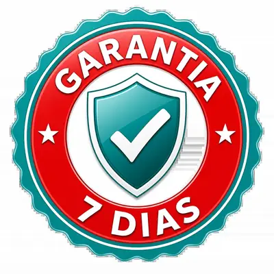
Você tem 7 dias para acessar e conhecer o material. Você acessa, conhece a estrutura e visualiza como os mapas foram organizados.
Se estiver dentro das regras e do prazo aplicável, você poderá solicitar o reembolso pelos canais indicados na plataforma de pagamento.
✔ Sem burocracia ✔ Sem perguntas ✔ Todo o risco é nosso
Seu acesso começa imediatamente. Seu risco é reduzido pela garantia.
Escolha seu plano, finalize a compra e consulte sempre que precisar.
Escolha seu plano
Plano Essencial ou Plano Completo com todos os bônus.
Receba as instruções de acesso
Enviadas após a confirmação do pagamento.
Abra no dispositivo que preferir
Consulte sempre que precisar
É um atlas digital de consulta composto por 100 mapas visuais relacionados a regiões e aplicações pertinentes da eletroterapia/eletroestimulação.
Não. Ele funciona como ferramenta educacional e de apoio à consulta e revisão, sem substituir uma formação completa.
O material pode ser utilizado para estudo por profissionais e estudantes da saúde. A utilização clínica deve respeitar formação, habilitação e regulamentação profissional.
Os mapas podem apresentar informações essenciais e referências pertinentes. O Guia Visual de Parâmetros e Visor do Aparelho (Hz, µs, mA, Rampas), no Plano Completo, aprofunda os conceitos relacionados aos parâmetros.
Não necessariamente. Equipamentos possuem especificações e orientações diferentes, por isso use o material junto à literatura pertinente e às instruções do fabricante.
Você não precisa ler os 100 mapas de uma vez. Consulte cada conteúdo conforme sua necessidade e retorne aos anteriores quando quiser.
O produto é digital. Após a confirmação do pagamento, você recebe as orientações de acesso conforme a plataforma utilizada.
Não. A proposta da oferta é oferecer acesso vitalício ao material adquirido.
Você terá acesso aos canais de suporte informados na página de pagamento. O suporte não substitui orientação clínica ou formação profissional.
Sim. A oferta possui garantia de 7 dias, observadas as condições informadas no momento da compra.